13
成分分析和降维
在这一章中，我们将介绍执行组件分析和维度缩减的最常见和最重要的技术。当处理大型数据集时，通常需要优化算法的性能，实现这一目标的最合理的方法之一是移除那些信息内容可以忽略的要素。本章中讨论的模型允许我们对数据集的组成部分进行完整的分析，并只选择那些对结果有价值的组成部分。特别是，我们将讨论以下主题:
- 要素分析
- 主成分分析 ( PCA )、核 PCA、稀疏 PCA
- 独立分量分析 ( ICA )
- 简要说明隐马尔可夫模型 ( HMMs )考虑 EM 步长的前向-后向算法
现在，我们可以通过讨论一种非常灵活的算法来分析存在噪声项的数据集的组成部分，从而开始对这些模型的探索。
因素分析
假设我们有一个高斯数据生成过程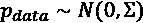，并从中抽取了 M n 维零中心样本:
如果 p 由于零对中通常没有缺点，因此更容易移除平均值以简化模型。
无监督学习中最常见的问题之一是找到更低的维度分布pT28】lower，使得与pT32】数据的 Kullback-Leibler 散度最小化。在执行因子分析 ( FA )时，遵循 Rubin D .、Thayer D .、 EM 算法用于 ML 因子分析、 Psychometrika，47/1982，第 1 期，以及 Ghahramani Z .、Hinton G. E .、EM 算法用于因子分析混合物、 CRC-TG-96-1，1996 年 5 月，我们从假设我们可以对模型进行建模开始
矩阵 A 被称为因子加载矩阵，因为它决定了每个潜在变量(因子)对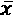重构的贡献。假设因素和输入数据在统计上是独立的。相反，考虑最后一项，如果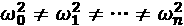，噪声称为异方差，如果方差相等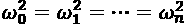，则定义为同方差。为了理解这两种噪声之间的区别，考虑一个信号，它是两个相同声音的总和，记录在不同的地方(例如，一个机场和一个树林)。在这种情况下，我们很容易想象这些记录如何具有不同的噪声方差；也就是说，异方差噪声(考虑到不同噪声源的数量，来自机场的记录应该比森林记录具有更高的方差)。相反，如果两种声音都在隔音的房间里录制——甚至是在同一个机场——则更有可能出现同质噪声(我们不考虑噪声的幅度，只考虑方差之间的差异)。
与其他方法(如 PCA)相比，FA 最重要的优势之一是它对异方差噪声的内在鲁棒性。事实上，在模型中包括噪声项(仅具有要去相关的约束)允许基于单个分量的部分去噪滤波，而 PCA 的前提条件之一是仅施加同方差噪声(在许多情况下，这非常类似于完全没有噪声)。考虑到前面的例子，我们可以假设第一个方差是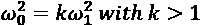。以这种方式，模型将能够理解第一分量中的高方差应该(以更高的概率)被认为是噪声的产物，而不是该分量的固有属性。
线性关系分析
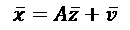
考虑到高斯分布的特性，我们知道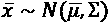并且很容易确定均值或协方差矩阵:
因此，为了解决问题，我们需要找到最佳的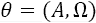，以便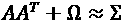(对于以零为中心的数据集，估计仅限于输入协方差矩阵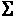)。应对嘈杂变量的能力现在应该更清晰了。如果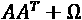恰好等于并且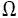的估计正确，算法将优化因子加载矩阵 A ，排除噪声项产生的干扰；因此，组件将被近似去噪。
为了采用 EM 算法，我们需要确定联合概率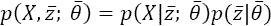。考虑到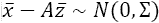，右侧的第一项很容易确定。因此，我们得到以下结果:
我们现在可以确定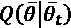函数，丢弃常数项和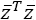项，因为它们不依赖于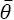(在这种特殊情况下，正如我们将要看到的，我们不需要计算概率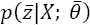，因为它足以获得期望值和二阶矩的足够统计数据)。此外，以指数形式扩展乘法也很有用:
对最后一项(标量)使用跟踪技巧，我们可以将其重写如下:
利用算子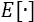的线性度，我们得到如下结果:
这个表达式类似于我们在高斯混合模型中看到的，但是在这种情况下，我们需要计算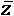的条件期望和条件二阶矩。不幸的是，我们不能直接这样做，但是可以利用和的联合正态性来计算它们。具体而言，使用经典定理，我们可以划分完整的联合概率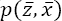，考虑以下等式:
条件分布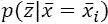的平均值等于:
条件方差如下:
因此，条件二阶矩等于:
使用前面的表达式，可以建立逆模型(有时称为识别模型，因为它从结果开始并重建原因)，它仍然是高斯分布的:
考虑到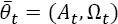和条件期望以及根据先前估计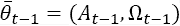计算的二阶矩，我们现在能够相对于 A 和最大化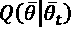。因此，它们不参与推导过程。我们采用的惯例是，最大化项是在时间 t 计算的，而所有其他项是通过先前的估计(t–1)获得的:
因此，ATT的表达式如下( Q 是零中心数据集的有偏输入协方差矩阵E[XT26】TX):
同样，我们可以通过计算相对于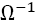的导数来获得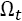的表达式(这种选择简化了计算并且不影响结果，因为我们必须将导数设置为零):
使用调整矩阵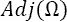并利用逆矩阵TT35】-1= det(T)-1Adj(T)的属性(detT)-1= det来获得第一项的导数，即实对角矩阵的行列式
总结这些步骤，我们可以定义完整的 FA 算法:
- 为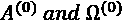设置随机初始值
- 计算有偏输入协方差矩阵Q=E[XTX]
- 电子步骤:计算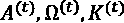
- m 步:使用之前的估计和之前提供的公式计算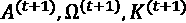
- 计算逆模型的矩阵 B 和
必须重复该过程，直到停止修改它们的值(使用阈值)以及对最大迭代次数的限制。使用逆模型可以容易地获得这些因子。
使用 scikit-learn 进行因子分析的示例
现在，我们可以使用原始版本中的 MNIST 手写数字数据集(70，000 个 28 × 28 灰度图像)和添加的异方差正态噪声(在范围(0，0.25)中随机选择)，用 scikit-learn 对 FA 的示例进行编码。
第一步是加载原始数据集并使其归零(我使用的是第 1 章、机器学习模型基础中定义的函数):
import numpy as np
from sklearn.datasets import fetch_openml
def zero_center(X):
return X - np.mean(X, axis=0)
digits = fetch_openml("mnist_784")
X = zero_center(digits['data'].
astype(np.float64) / 255.0)
np.random.shuffle(X)
Omega = np.random.uniform(0.0, 0.25,
size=X.shape[1])
Xh = X + np.random.normal(0.0, Omega,
size=X.shape)
在这个步骤之后，X变量将包含零中心原始数据集，而Xh是噪声版本。以下屏幕截图显示了从两个版本中随机选择的样本:
MNIST 样本(左)。噪音版本(右)
我们可以使用带有n_components=64参数的 scikit-learn FactorAnalysis类对两个数据集执行 FA，并检查分数(所有样本的平均对数似然)。如果噪声方差是已知的(或者有一个很好的估计)，可以通过noise_variance_init参数包含起点；否则，它将用单位矩阵初始化:
from sklearn.decomposition import FactorAnalysis
fa = FactorAnalysis(n_components=64,
random_state=1000)
fah = FactorAnalysis(n_components=64,
random_state=1000)
Xfa = fa.fit_transform(X)
Xfah = fah.fit_transform(Xh)
print('Factor analysis score X: {:.3f}'.
format(fa.score(X)))
print('Factor analysis score Xh: {:.3f}'.
format(fah.score(Xh)))
显示平均对数似然的输出为:
Factor analysis score X: 1821.404 Factor analysis score Xh: 311.249
正如所料，噪声的存在降低了最终精度(MLE)。按照 A. Gramfort 和 D. A. Engemann 在最初的 scikit-learn 文档中提供的示例，我们可以使用 Ledoit-Wolf 算法(一种改进协方差条件的收缩方法,超出了本书的范围)为 MLE 创建一个基准。欲了解更多信息，请阅读 Ledoit O .，Wolf M .，一种适用于高维协方差矩阵的条件良好的估计器，多变量分析杂志，88，2/2004:
from sklearn.covariance import LedoitWolf ldw = LedoitWolf() ldwh = LedoitWolf() ldw.fit(X) ldwh.fit(Xh)
平均对数似然为:
print('Ledoit-Wolf score X: {:.3f}'.
format(ldw.score(X)))
print('Ledoit-Wolf score Xh: {:.3f}'.
format(ldwh.score(Xh)))
输出是:
Ledoit-Wolf score X: 1367.221 Ledoit-Wolf score Xh: 346.825
对于原始数据集，FA 的性能比基准测试好得多，而在存在异方差噪声的情况下，FA 的性能稍差。读者可以使用不同数量的元件和噪声方差的网格搜索来尝试其他组合，并试验消除零居中步骤的效果。可以使用components_实例变量绘制提取的组件:
原始数据集上通过因子分析提取的 64 个成分的图
仔细分析表明，这些组件是许多低级视觉特征的叠加。这是假设我们在组件上具有高斯先验分布的结果()。事实上，这种分布的一个缺点是其固有的密集性(采样值远离平均值的概率通常太高，而在某些情况下，希望有一个峰值分布来阻止值不接近其平均值，以便能够更有选择性地观察成分)。
此外，考虑到分布的，协方差矩阵可能不是对角的(试图施加这种约束会导致无法解决的问题)，从而导致最终的多元高斯分布，它通常不是由独立分量组成的。通常，单个变量(以输入点为条件)是统计相关的，并且重建是在几乎所有提取特征的参与下获得的。在所有这些情况下，我们说编码是密集的，特征字典是不完全的(组件的维数低于)。考虑到应用于 A (因子加载矩阵)的任何正交变换 Q 不会影响分布，缺乏独立性也是一个问题。事实上，作为QQT19】T=I，以下适用:
换句话说，任何特征旋转()总是原始问题的解决方案，不可能决定哪个是真正的加载矩阵。所有这些条件导致进一步的结论，即组件之间的互信息不等于零，也不接近最小值(在这种情况下，它们中的每一个都携带特定部分的信息)。另一方面，我们的主要目标是降低维度。既然是这样，那么我们有依赖成分也就不足为奇了，因为我们的目的是保存最大数量的包含在 p ( X )中的原始信息(记住信息量与熵有关，后者与方差成正比)。
在 PCA(仍然基于高斯假设)中可以观察到相同的现象，但在最后一段中，我们将讨论一种称为 ICA 的技术，其目标是在从一组统计独立的特征开始之后，创建每个样本的表示(没有维数缩减的约束)。这种方法，即使有其独特之处，也属于一个称为稀疏编码的大算法家族。在这种情况下，如果对应的字典有就称为过完备(当然，主要目标不再是降维)。然而，我们将只考虑字典最完整的情况，因为字典过完整的 ICA 需要更复杂的方法。当然，稀疏程度与成正比，使用 ICA，它总是作为次要目标来实现(主要目标总是组件之间的独立性)。
主成分分析
另一种常见的解决高维数据集降维问题的方法是基于这样一种假设，即通常情况下，总方差并不能被所有的成分同等地解释。如果pT7】数据是具有协方差矩阵的多元高斯分布，那么熵(其是包含在分布中的信息量的度量)如下:
因此，如果一些分量具有非常低的方差，它们对熵的贡献也是有限的，并且提供很少的附加信息。因此，它们可以被移除而不会有很高的精度损失。
正如我们对 FA 所做的一样，让我们考虑一个来自的数据集(为了简单起见，我们假设它是以零为中心的，即使这不是必需的):

我们的目标是定义一个线性变换，(向量通常被认为是一个列，因此，有一个形状( n x 1))，如下所示:
由于我们想找出方差较高的方向，我们可以从输入协方差矩阵的特征分解开始，构建我们的变换矩阵 A (它是实的、对称的、正定的):
V 是包含特征向量的( n x n )矩阵(作为列)，而是包含特征值的对角矩阵。此外， V 也是正交的，因此特征向量构成了基。另一种方法是基于奇异值分解 ( SVD )，其具有增量变量。还有一些算法可以执行任意数量分量的截断分解，从而加快收敛过程(如 scikit-learn 实现 TruncatedSVD)。在这种情况下，很容易注意到样本协方差如下(如果 M > > 1，并且估计几乎是无偏的):
如果我们将 SVD 应用于矩阵 X (每一行代表具有形状的单个数据点(1 x n ))，我们将获得以下结果:
U 是包含(作为行)左奇异向量(XXT45】T 的特征向量)的酉矩阵， V (也是酉矩阵)包含(作为行)右奇异向量(对应于XT51】TT53】X 的特征向量)，而是包含的奇异值(它们是平方根传统上，特征值按降序排序，特征向量重新排列以匹配相应的位置。
因此，我们可以直接使用矩阵来选择最相关的特征值(平方根是增函数，并且不改变顺序)和矩阵 V 来检索相应的特征向量(因子 是比例常数)。通过这种方式，我们不需要计算和特征分解协方差矩阵(包含 n x n 元素)，并且我们可以开发一些仅适用于数据集的非常快速的近似算法(不需要计算 X T X )。利用 SVD 可以直接做 X 的变换，考虑到 U 和 V 是酉矩阵(这意味着UUT=UTU=I；因此，共轭转置也是逆的):
是比例常数)。通过这种方式，我们不需要计算和特征分解协方差矩阵(包含 n x n 元素)，并且我们可以开发一些仅适用于数据集的非常快速的近似算法(不需要计算 X T X )。利用 SVD 可以直接做 X 的变换，考虑到 U 和 V 是酉矩阵(这意味着UUT=UTU=I；因此，共轭转置也是逆的):
现在， X 只是被投影到了特征向量空间中(它只是被简单地旋转了一下),它的维数没有改变。然而，从特征向量的定义，我们知道下面是正确的:
如果很大，那么的投影会按比例放大到对应特征向量的方向所解释的方差。因此，如果还没有这样做，我们可以对特征值和相应的特征向量进行排序(和重命名),得到如下结果:
如果我们选择前 k 个特征值，我们可以基于将 X 投影到原始特征向量空间的子空间上的相应特征向量(主分量)来构建变换矩阵:
使用 SVD，代替 A k ，我们可以直接截断 U 和，创建矩阵 U k (它只包含顶部的 k 特征向量)和，一个具有顶部的 k 特征值的对角矩阵。
组件重要性评估
为了实现这一目标，通常需要比较不同数量组件的性能。在下图中，方差比率(方差由分量 n 解释/总方差)和累积方差被绘制为分量的函数:
每个成分的解释方差(左)和每个成分的累积方差(右)
在这种情况下，前 10 个成分能够解释总方差的 80%。其余 25 个组件的影响越来越小，可以删除。但是，选择必须始终基于具体的背景，考虑到信息丢失导致的价值损失。
确定元件正确数量的技巧是基于对 X 的特征值的分析。排序后，可以考虑后续值之间的差异。最高差值决定了潜在最优缩减的指数 k (显然，需要考虑最小值的约束，因为通常是最高差值)。例如，如果 d = {4，4，3，0.2，0.18，0.05}，则原始维数为n= 6；然而，是最小的差异，因此，将维度减少到(n+1)–k= 3 是合理的。原因很简单；特征值决定了每个分量的大小，但是我们需要一个相对的量度，因为标度是变化的。在这个例子中，最后三个特征向量指向的方向与前三个分量相比，所解释的方差可以忽略不计。
一旦我们定义了变换矩阵Ak，就有可能在新的子空间中执行原始向量的实际投影，通过关系:
整个数据集的完整变换简单地如下获得:
现在，我们来分析新的协方差矩阵E[ZTZ。如果原始分布是，也将是具有均值和协方差的高斯分布:
考虑到是对角的，结果矩阵也将是对角的。这意味着 PCA 对变换后的协方差矩阵去相关。同时，我们可以说，对输入协方差矩阵去相关的每个算法执行一个 PCA(有或没有维数减少)。例如，白化过程是一种没有降维的特定 PCA，而 Isomap(参见第 5 章、基于图的半监督学习)以更具几何性的方法对 Gram 矩阵执行相同的操作。这个结果将在第 14 章、 Hebbian Learning 中使用，以展示一些特定的神经网络如何在没有特征分解的情况下执行 PCA。
现在让我们考虑一个具有同方差噪声的 FA。我们已经看到条件分布的协方差矩阵等于。在同质噪声的情况下，它变成。对于一般协方差矩阵，可以证明添加一个常数对角矩阵不会修改原始特征向量，并且会将特征值移动相同的量:
因此，我们可以考虑没有噪声的一般情况而不失一般性。我们知道 FA(用)的目标是求矩阵 A ，这样(输入协方差)。因此，由于对称性和施加渐近等式，我们可以写出如下:
这一结果表明，FA 是一种在存在异方差噪声的情况下管理维数减少的更通用和更鲁棒的方法，而 PCA 是对同方差噪声的限制。当对受异方差噪声影响的数据集执行 PCA 时，MLE 恶化，因为改变不同水平的特征值的幅度的不同噪声分量可以驱动特征向量的选择，该特征向量仅解释原始数据集中的低百分比的方差(并且在无噪声的情况下，这些特征向量通常会被丢弃以有利于更重要的方向)。
如果回想一下我们在上一段开始时讨论的例子，我们知道噪声是强异方差的，但我们没有任何工具来告诉 PCA 如何处理它。这意味着，考虑到两个源是相同的，第一个分量的方差将比预期的高得多。不幸的是，在现实生活中，噪声是相关的，当噪声功率非常高时，因子和 PCA 都不能有效地解决问题。在所有这些情况下，必须采用更复杂的去噪技术。相反，只要有可能定义一个近似的对角噪声协方差矩阵，FA 肯定比 PCA 更加鲁棒和有效。后者应仅在无噪声或准无噪声情况下考虑。在这两种情况下，结果永远不会导致良好分离的特征。由于这个原因，已经研究了 ICA 并且设计了许多不同的策略。
带 scikit-learn 的 PCA 示例
我们可以重复使用 FA 和异方差噪声进行的相同实验，以评估 PCA 的 MLE 分数。我们将使用具有相同数量组件的 PCA 类(n_components=64)。为了达到最大的准确性，我们还设置了svd_solver='full'参数，以强制 scikit-learn 应用完整的 SVD，而不是截断的版本。这样，仅在分解后选择顶部特征值，避免了不精确估计的风险:
from sklearn.decomposition import PCA
pca = PCA(n_components=64,
svd_solver='full',
random_state=1000)
Xpca = pca.fit_transform(Xh)
print('PCA score: {:.3f}'.
format(pca.score(Xh)))
输出是:
PCA score: 162.927
结果并不令人惊讶:由于异方差噪声造成的不正确估计，MLE 比 FA 低得多。考虑到 PCA 的训练性能通常高于 FA，我邀请读者比较不同数据集和噪声水平的结果。因此，当处理大型数据集时，一个好的权衡肯定是可取的。与 FA 一样，可以通过components_实例变量检索组件。
有趣的是通过基于组件的实例数组explained_variance_ratio_来检查总解释方差(作为总输入方差的一部分):
print('Explained variance ratio: {:.3f}'.
format(np.sum(pca.explained_variance_ratio_)))
输出是:
Explained variance ratio: 0.677
用 64 个分量，我们解释了总输入方差的大约 68%。当然，使用图表比较解释的方差也是有用的:
每个组件的解释差异条形图
n components and compare the results) and, at the same time, the PCA will be able to overcome a higher threshold (such as 95%) only by adding a large number of new components. In this particular case, we know that the dataset is made up of handwritten digits; therefore, we can suppose that the tail is due to secondary differences (a line slightly longer than average, a marked stroke, and so on); hence, we can drop all the components with n > 64 (or less) without problems (it's also easy to verify visually a rebuilt image using the inverse_transform() method). However, it is always best practice to perform a complete analysis before moving on to further processing steps, particularly when the dimensionality of X is high.
Minka 提出了另一种确定最佳组分数量的有趣方法(在 Minka T. P .，PCA 的维数自动选择，NIPS 2000)，该方法基于贝叶斯模型选择。
想法是使用 MLE 来优化似然性 p ( X | k )，其中 k 是指示组件数量的参数。换句话说，它并不开始分析解释的方差，而是确定一个 k < n 的值，使得可能性保持最高可能(隐含地， k 将解释 maxk=kmax约束下的最大可能方差)。该方法的理论基础(带有冗长的数学推导)在前面提到的论文中给出。然而，通过设置n_components='mle'和svd_solver='full'参数，可以将这种方法用于 scikit-learn。
内核主成分分析
当数据集为非线性可分时，真实主成分可能无法正确检测。例如，考虑以下径向数据集:
from sklearn.datasets import make_circles
X, _ = make_circles(n_samples=1000,
factor=0.25,
noise=0.1)
下图显示了一个图形表示:
核主成分分析示例的径向数据集
数据集几乎是对称的；因此，标准 PCA 可以容易地检测正交且具有大约相同幅度的主成分。然而，这不足以执行考虑数据集实际语义的维度缩减。事实上，在这种情况下，内部斑点显然是由周围圆圈分隔的密集成分，为了了解哪些成分对解释的方差有较大影响，可能有必要突出显示这一属性。
为了解决这个问题，我们有必要执行预处理转换。想象有一个函数，其中 m 一般(但不一定)大于 n 。新点是原始点在特征空间 G 上的投影，在特征空间中非线性被移除，并且分量可以被线性分离。这种空间非常普遍，一般来说，付出的代价只是增加了复杂性(因为转换)。然而，许多算法(例如，支持向量机)基于数据点之间的点积，不需要显式转换。幸运的是，这些问题通常可以通过使用所谓的内核技巧来解决。我们不打算深究所有的数学理论(这需要更多的篇幅，超出了本书的范围)，但可以说，给定一个特征图，在温和的条件下，有可能找到一个核等于:
换句话说，特征空间中的点积就是为这两个点评估的核。 PCA 基于协方差矩阵的特征分解。很容易理解，处理由内核引起的 Gram 矩阵类似于处理特征空间中的协方差矩阵。实际上，克矩阵条目是。此时，考虑标准的 PCA 变换，并应用特征投影，我们得到 。
矩阵WT7】G 是核 PCA 投影矩阵，通过计算 Gram 矩阵的特征向量并执行乘法简单获得。因此，特征空间中的最终变换变成了 。最后一步是内核技巧本身，它允许我们直接在特征空间中执行 PCA 投影，而不需要变换所有点。我们在讨论谱聚类的时候已经分析了一些核；因此，我们不再展示它们。然而，现在应该很容易理解，我们的示例可以通过使用径向基函数 ( RBF )内核来轻松解决:

显然，相应的特征空间是径向的(因此对于角度是不变的)，并且通过参数，可以控制高斯曲线的幅度(以便捕捉或排除特定区域)。
现在让我们使用 RBF 内核来执行内核 PCA:
from sklearn.decomposition import KernelPCA
kpca = KernelPCA(n_components=2,
kernel='rbf',
fit_inverse_transform=True,
gamma=5,
random_state=1000)
X_kpca = kpca.fit_transform(X)
在这种情况下，我们选择了，因为中心和边界之间的平均间距约为 0.5，选择，因此高斯分布的标准偏差为。在大约三个标准偏差之后，该值接近于零，因此我们应该能够完美地分离这些区域。结果如下图所示:
核 PCA 投影
正如所看到的，可以使用单个分量(来分离数据集，而第二个分量(对应于角度)可以忽略不计，因为分散仅由噪声引起。
稀疏主成分分析
稀疏 PCA 是一种特殊的降维技术，也称为字典学习。目标是确定一个原子字典(换句话说，可以组装以构成任何其他现有数据点的唯一元素)，以便将每个训练和新点表示为它们的组合。就像在自然语言中，有限数量的单词可以组成无限数量的文本一样，稀疏 PCA 的目标是确定那些可重用性使其成为组成字典的完美候选的元素。为了实现这个目标，我们需要用一种更严谨的方式来表述这个问题。
给定一个数据集，我们需要用 k < < n 和一组权重 确定一个包含 k 个原子的字典(注意每个原子都具有相同的数据点维数)。使用这些元素，我们可以计算转换:
确定一个包含 k 个原子的字典(注意每个原子都具有相同的数据点维数)。使用这些元素，我们可以计算转换:
问题可以通过采用最小化重建的均方误差和权重的 L 1 范数的特定成本函数来解决(以引起稀疏性):
参数 控制稀疏程度。很明显，更强的稀疏性将迫使算法运行更长的时间，并且最优可能无法获得高质量的重建。然而，当数据集本质上被分割成可以重用的元素(比如单词——这就是为什么这种方法也被称为字典学习)时，通常采用这种技术。事实上，该算法找到的组件在某种程度上是原理，因为它们的重用意味着这些组件具有相当大的方差的底层分布，但是形式上，稀疏 PCA 不是真正的 PCA，而是一种降维算法。此外，即使稀疏约束倾向于避免(或限制)冗余，成本函数也不能保证找到去相关的分量。
控制稀疏程度。很明显，更强的稀疏性将迫使算法运行更长的时间，并且最优可能无法获得高质量的重建。然而，当数据集本质上被分割成可以重用的元素(比如单词——这就是为什么这种方法也被称为字典学习)时，通常采用这种技术。事实上，该算法找到的组件在某种程度上是原理，因为它们的重用意味着这些组件具有相当大的方差的底层分布，但是形式上，稀疏 PCA 不是真正的 PCA，而是一种降维算法。此外，即使稀疏约束倾向于避免(或限制)冗余，成本函数也不能保证找到去相关的分量。
现在让我们将该算法应用于 MNIST 数据集(考虑到复杂性，我们将仅对 10 张图片进行处理):
from sklearn.datasets import fetch_openml
digits = fetch_openml("mnist_784")
X = zero_center(digits['data'].
astype(np.float64) / 255.0)
np.random.shuffle(X)
现在让我们应用稀疏 PCA 来获得 10 个分量(因此,因为每个图像有 28×28 = 784 个特征):
from sklearn.decomposition import SparsePCA
spca = SparsePCA(n_components=10,
alpha=0.1,
normalize_components=True,
n_jobs=-1,
random_state=1000)
X_spca = spca.fit_transform(X[0:10, :])
print('SPCA components shape:')
print(spca.components_.shape)
参数α对应于LT8】1 惩罚约束。我们还使用库 joblib 来进行并行计算，因为这种算法非常慢。前面代码片段的输出是:
SPCA components shape: (10, 784)
词典位置颠倒了，但尺寸是正确的。下图中还显示了 10 个组件:
稀疏主成分分析发现的成分
训练集非常小，但有趣的是注意到组件是如何组装成不同的数字的。然而，由于数据集是二次抽样的，结果字典几乎是过度完整的。因此，这些分量是强交叉相关的。
作为练习，我邀请读者使用更多的数据点(可能是整个数据集)来训练模型，并检查最终结果。考虑到数字的几何结构，我们发现字典中的笔画几乎是正交的就不足为奇了。
独立成分分析
我们已经看到，PCA 提取的因子是去相关的，但不是独立的。一个经典的例子是鸡尾酒会:我们有许多重叠声音的录音，我们想把它们分开。每一个声音都可以建模为一个随机过程，并且可以假设它们在统计上是独立的(这意味着可以使用每个源的边际概率来分解联合概率)。使用 FA 或 PCA，我们可以找到不相关的因素，但没有办法评估它们是否也是独立的(通常情况下，它们不是独立的)。在这一节中，我们将研究一个模型，它能够用一组统计上独立的成分产生稀疏表示(当字典不是不完全时)。
假设我们有一个从 N (0， I )采样的以零为中心的白化数据集 X 和无噪声线性变换:
在这种情况下，上的先验被建模为独立变量的乘积(是归一化因子)，每个独立变量被表示为通用指数，其中函数必须是非二次的，即不能是高斯的。此外，我们假设的方差等于 1，因此。联合概率等于:
如果 X 已经白化， A 正交(证明很简单)；因此，前面的表达式可以简化。然而，应用 EM 算法需要确定和，这相当困难。在为(即)选择合适的先验分布后，这个过程可能会更容易，但是，正如我们在本章开始时所讨论的，如果实际因子的分布不同，这个假设可能会产生戏剧性的后果。由于这些原因，已经研究了其他策略。
我们需要强调的主要概念是因子的非高斯分布。特别是，我们希望有一个带重尾的尖峰分布(导致稀疏)。从理论上，我们知道标准化的四阶矩(也称为峰度)是一个完美的度量:
对于高斯分布， Kurt [ X ]等于 3(通常被认为是参考点，确定所谓的过度峰度[X]=Kurt[X]-3)，而对于一族分布，它更大，称为细尾分布或超高斯分布，它们是尖峰厚尾的(此外， 具有Kurt[X]<3 的分布，称为platykurtic或 sub-Gaussian ，可以是很好的候选，但是它们的峰值较小，通常只考虑超高斯分布。 然而，即使是精确的，由于四次方的原因，这种度量对异常值非常敏感。例如，如果 x ~ N (0，1)和z=X+v，其中 v 是改变一些样本的噪声项，将它们的值增加到 2，则结果可以是超高斯(Kurt[X]>3)，即使在滤波之后
为了克服这个问题，hyvrinen 和 Oja(在 hyvrinen a .，Oja E .，独立成分分析:算法和应用，神经网络 13/2000)提出了一种基于另一种度量的解决方案，即负熵。我们知道熵与方差成正比，给定方差，高斯分布具有最大熵。因此，我们可以定义该度量:
形式上， X 的负熵是具有相同协方差的高斯分布的熵与 X 的熵之差(我们假设两者都以零为中心)。很容易理解，因此，最大化的唯一方法是减少 H ( X )。这样， X 就变得不那么随机，把概率集中在均值附近(换句话说，就变成了超高斯)。然而，之前的表达式不容易适用于封闭形式的解决方案，因为 H ( X )需要在 X 的整个分布上进行计算，这必须进行估计。出于这个原因，相同的作者提出了一种基于非二次函数的近似(请记住，在 ICA 的上下文中，永远不能使用二次函数，因为它会导致高斯分布)，这对于推导一种称为 FastICA 的定点迭代算法非常有用(事实上，它确实比 EM 快)。
使用 k 函数，近似值如下:
在许多实际场景中，单个函数就足以达到合理的精度，下面是 f ( x )最常见的选择之一:
在前面提到的论文中，读者可以找到一些替代方案，当这个函数在强制分量之间的统计独立性方面失败时，可以采用这些替代方案。
如果把模型反过来，我们得到带W=A-1；因此，考虑单个样本，近似值变为如下:
很明显，第二项不依赖于 w (其实只是一个参考)，可以排除在优化之外。而且，考虑到最初的假设，E[ZTZ=我们[XTXWT=I，因此 WW 因此，我们的目标是找到以下内容:
通过这种方式，我们迫使矩阵 W 转换输入向量，这样具有最低可能的熵；因此，它是超高斯的。最大化过程基于超出本书范围的凸优化技术(读者可以在 luen Berger d . g .通过向量空间方法优化， Wiley，1997 中找到拉格朗日定理的所有细节)。因此，我将直接提供必须执行的迭代步骤:
当然，为了保证，每一步之后，权重向量都必须归一化()。
在更一般的上下文中，矩阵 W 包含不止一个权重向量，并且如果我们应用先前的规则来找出独立的因素，则可能发生一些元素是相关的。避免这个问题的策略是基于 Gram-Schmidt 正交归一化过程，该过程逐个去相关分量，减去当前分量到所有先前分量到的投影。通过这种方式，被强制与所有其他组件正交。
带有 scikit-learn 的 FastICA 示例
使用相同的数据集，我们现在可以测试 ICA 的性能。然而，在这种情况下，正如所解释的，我们需要对数据集进行零中心和白化，但幸运的是，这些预处理步骤是由 scikit-learn 实现完成的(如果省略了参数whiten=True)。
为了在 MNIST 数据集上执行 ICA，我们将实例化FastICA类，传递参数n_components=64和最大迭代次数max_iter=5000。也可以指定哪个函数将用于近似负熵；然而，缺省值是 log cosh x ，这通常是一个合理的选择:
from sklearn.decomposition import FastICA
fastica = FastICA(n_components=64,
max_iter=5000,
random_state=1000)
fastica.fit(X)
此时，我们可以可视化组件(通过components_实例变量总是可用的):
由 FastICA 算法提取的 MNIST 数据集的独立分量(64 个分量)
还有一些冗余(读者可以尝试增加元件数量)和背景噪声；然而，现在可以区分许多数字共有的一些低级特征(如定向条纹)。这种表示还不是很稀疏。事实上，我们总是使用 64 个组件(比如 FA 和 PCA)；所以字典是欠完备的(输入维数为 28 × 28 = 784)。为了看出区别，我们可以用十倍大的字典重复这个实验，设置n_components=640:
fastica = FastICA(n_components=640,
max_iter=5000,
random_state=1000)
fastica.fit(X)
下图显示了新组件(100)的子集:
由 FastICA 算法提取的 MNIST 数据集的独立分量(640 个分量)
这些组件的结构几乎是基本的。它们代表定向条纹和位置点。为了检查输入是如何重建的，我们可以将混合矩阵视为(可以作为mixing_实例变量获得)。考虑第一个输入样本，我们可以检查有多少因素的权重小于平均值的一半:
import numpy as np M = fastica.mixing_ M0 = M[0] / np.max(M[0]) print(len(M0[np.abs(M0) < (np.mean(np.abs(M0)) / 2.0)]))
输出是:
233
该示例使用大约 410 个组件重建。稀疏程度更高，但考虑到因素的粒度，很容易理解，即使是重建存在长线的单个结构(如 a 1 的图像),也需要许多因素。然而，这并不是一个缺点，因为如前所述，ICA 的主要目标是提取独立成分。考虑与鸡尾酒会的例子进行类比，我们可以推断出每个成分代表一个音素，而不是一个单词或句子的完整声音。
读者可以测试不同数量的组件，并将结果与其他稀疏编码算法(如字典学习或稀疏 PCA)获得的结果进行比较。
隐马尔可夫模型补遗
在前一章中，我们讨论了如何使用前向-后向算法训练 HMM，我们已经看到这是 EM 算法的一个特殊应用。读者现在可以根据 E 和 M 步骤来理解内部动态。事实上，该过程从随机初始化的 A 和 B 矩阵开始，并以交替的方式进行:
- 电子步骤:
- 给定观察和当前参数估计( A 和 B ，估计 HMM 在时间 t 处于状态 i 以及在时间 t + 1 处于状态 j 的概率
- 给定观察值和当前参数估计值( A 和 B ，估计 HMM 在时间 t 处于状态 i 的概率
- m 步:
- 计算跃迁概率AT33】ij(A)和发射概率BIP(B的新估计值
重复该过程，直到达到收敛。即使没有一个 Q 函数的明确定义，E-step 也会为给定观察值的模型的预期完整数据可能性确定一个拆分表达式(使用向前和向后算法)，而 M-Step 会修正参数 A 和 B 以最大化这种可能性。
总结
在这一章中，我们分析了三种不同的组件提取方法。FA 假设我们有少量的高斯潜变量和高斯去相关噪声项。对噪声的唯一限制是有一个对角协方差矩阵，因此可能有两种不同的情况。当我们面对异方差噪声时，这个过程就是一个实际的 FA。相反，当噪声是同质的时，该算法就相当于 PCA。在这种情况下，该过程相当于检查样本空间，以便找到方差较高的方向。仅选择最重要的方向，我们可以将原始数据集投影到低维子空间上，其中协方差矩阵变得去相关。
FA 和 PCA 的一个问题是假设潜在变量为高斯分布。这种选择简化了模型，但同时产生了单一成分在统计上相关的密集表示。为此，我们研究了如何使因子分布变得稀疏。由此产生的算法通常比最大似然法更快更准确，称为 FastICA，其目标是提取一组统计上独立的分量，使负熵的近似值最大化。
最后，考虑到细分为 E 和 M 步，我们提供了 HMM 向前-向后算法的简要说明(在前一章中讨论过)。其他 EM 专用应用将在下一章讨论。
下一章我们要介绍的是 Hebbian 学习和自组织映射的基本概念，对于解决很多具体问题，比如主成分提取，还是很有用的，有很强的神经生理学基础。
延伸阅读
- Dempster A. P .、Laird N. M .、Rubin D. B .，通过 EM 算法从不完整数据中获得最大似然，皇家统计学会杂志，B，39(1):1–38，11/1977
- Hansen F .，Pedersen G. K .，詹森算子不等式，arXiv:math/0204049【数学。OA]
- Rubin D .、Thayer D .，用于 ML 因子分析的 EM 算法，心理测量学，47/1982，第 1 期
- Ghahramani Z .，Hinton G. E .，因子分析仪混合物的 EM 算法，CRC-TG-96-1，1996 年 5 月
- Hyvä rinen A .，Oja E .，独立成分分析:算法和应用，神经网络 13/2000
- Luenberger D. G .，向量空间方法优化，Wiley，1997
- Ledoit O .，Wolf M .，一种适用于高维协方差矩阵的条件良好的估计量，多元分析杂志，88，2004 年 2 月
- Minka T. P .，PCA 维度的自动选择，NIPS 2000 年
- Nasios N .，Bors A. G., 高斯混合模型的变分学习， IEEE 系统、人与控制论汇刊，36/4，2006
- Bonaccorso G .，用 Python 进行动手无监督学习，Packt 出版社，2018 年